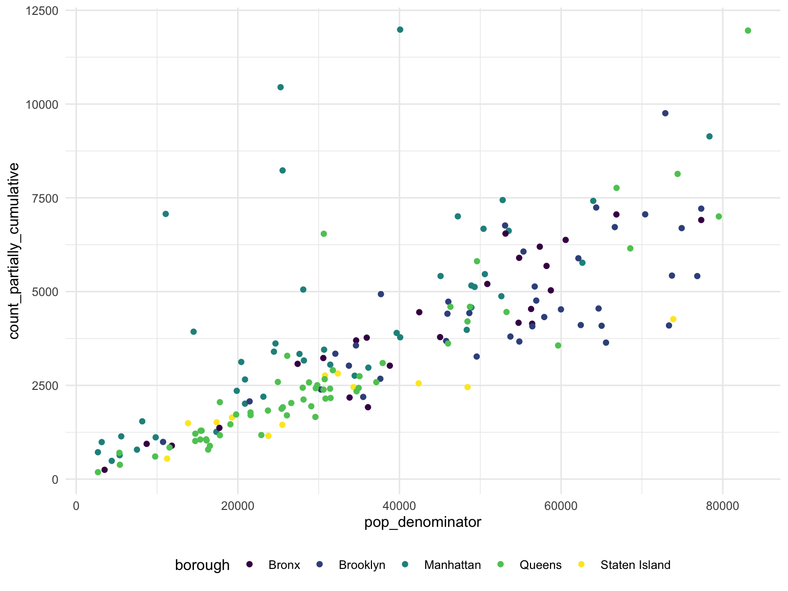
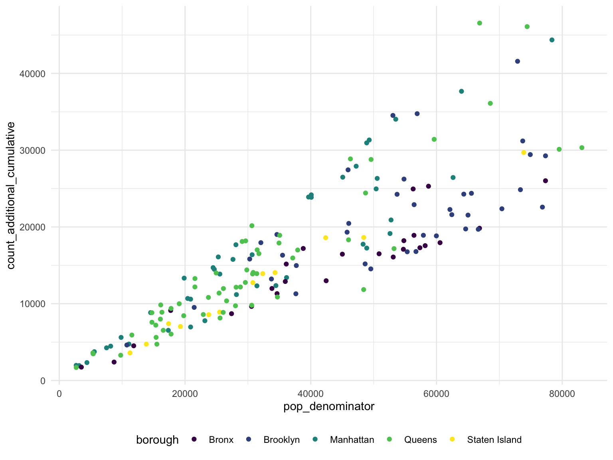
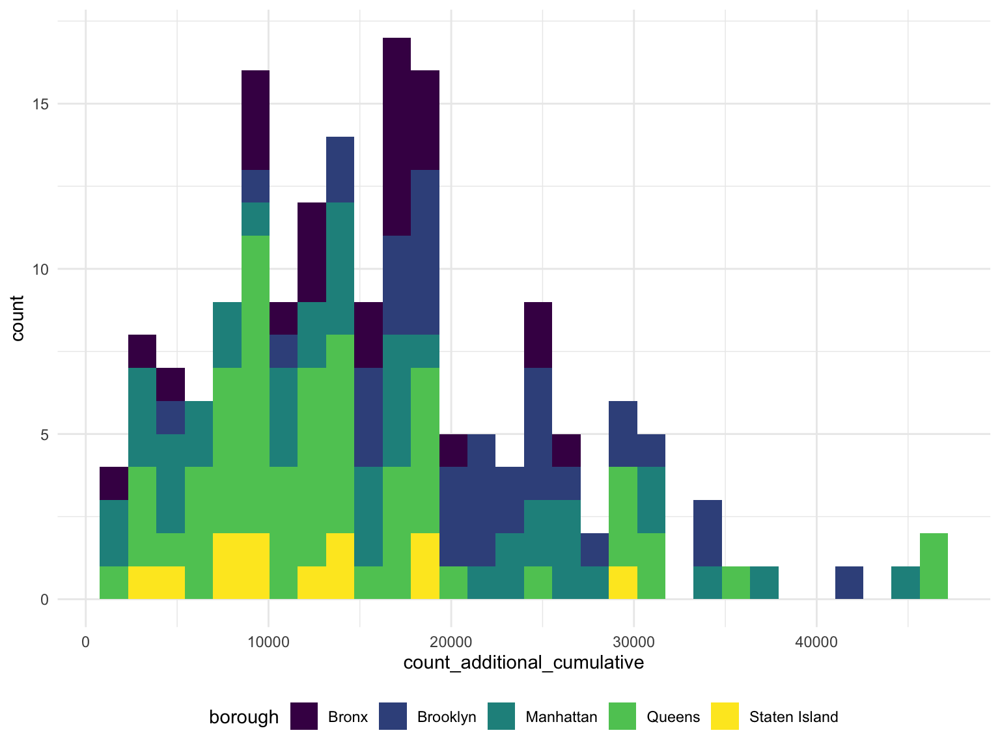
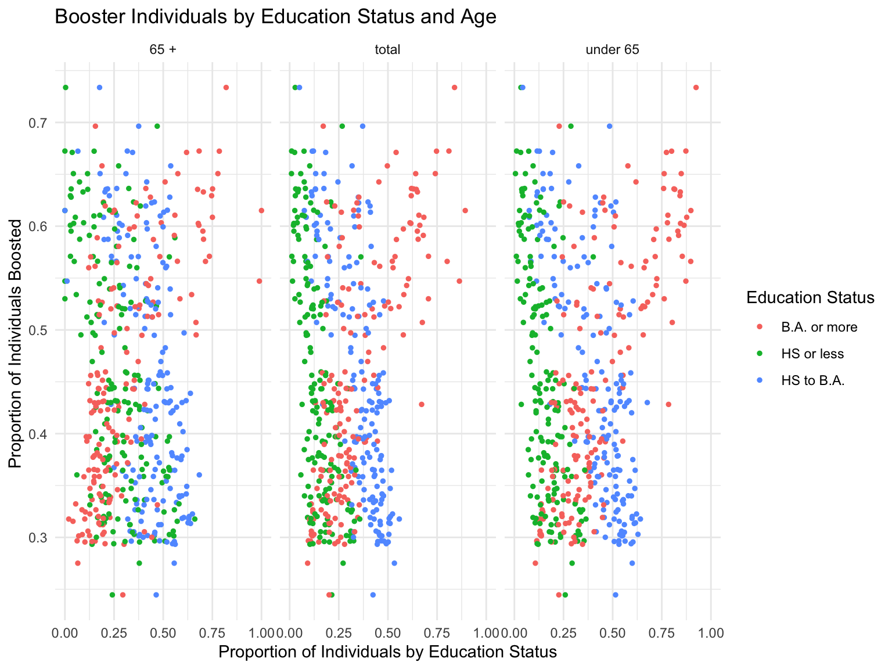
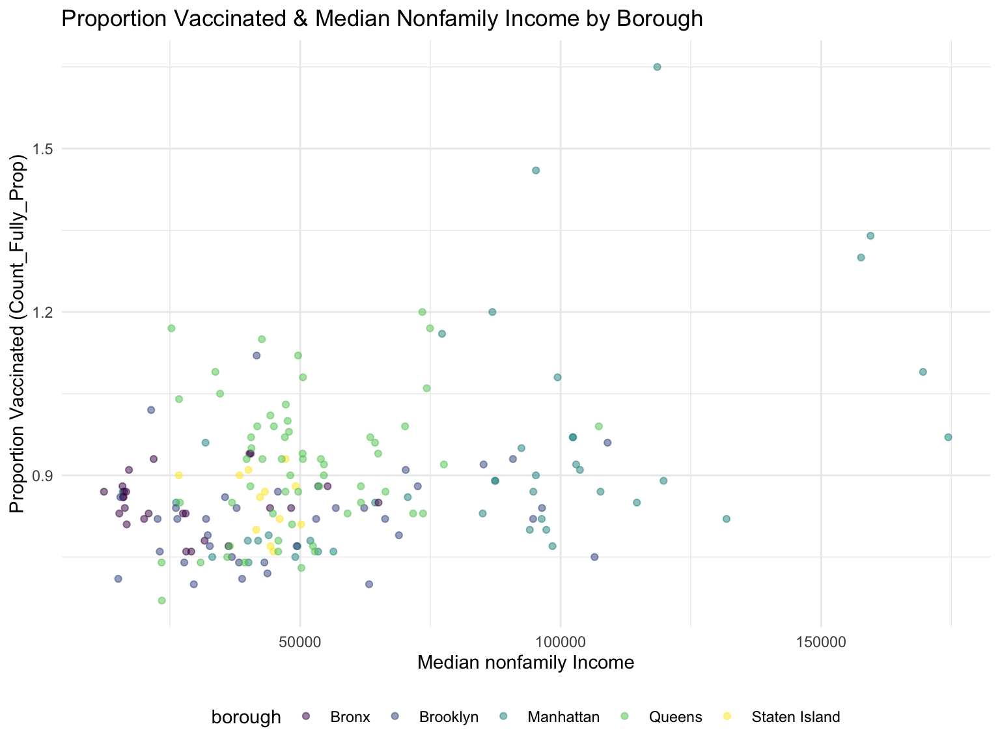
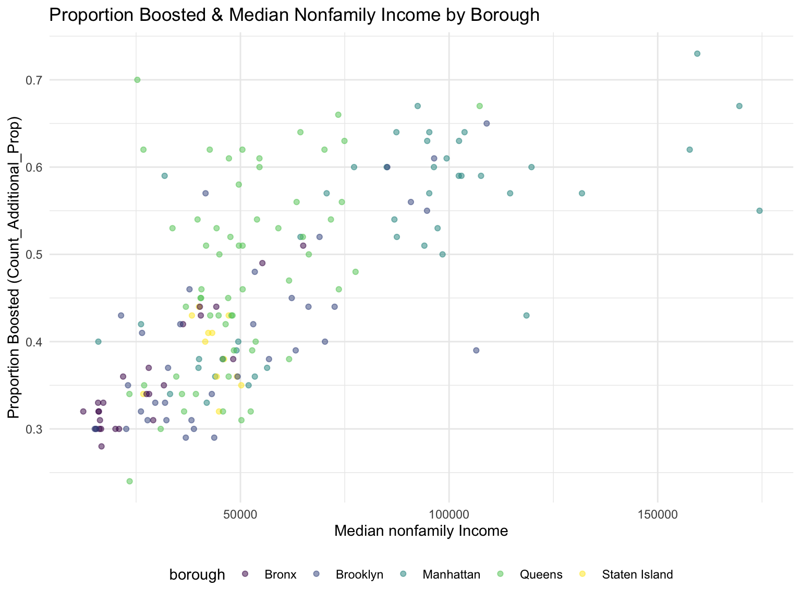

Exploratory Analysis
1. The vaccination coverage in NYC
MADE SOME SCATTERPLOTS with smooth line
ggplot(vaccine_coverage_df,aes (x = pop_denominator, y = count_fully_cumulative, color = borough)) + geom_point(alpha = .5) +
geom_smooth(se = FALSE) +
facet_grid(. ~ borough)## `geom_smooth()` using method = 'loess' and formula 'y ~ x'
ggplot(vaccine_coverage_df,aes (x = pop_denominator, y = count_partially_cumulative, color = borough)) + geom_point(alpha = .5) +
geom_smooth(se = FALSE) +
facet_grid(. ~ borough)## `geom_smooth()` using method = 'loess' and formula 'y ~ x'
MADE SOME SIMPLE SCATTERPLOTS AND THEIR GGPLOTLY
scatter_ggplot1 =
vaccine_coverage_df %>%
ggplot(aes(x = pop_denominator, y = count_partially_cumulative, color = borough)) +
geom_point(alpha = 1) +
coord_cartesian()
ggplotly(scatter_ggplot1)ggplot(vaccine_coverage_df,aes (x = pop_denominator, y = count_partially_cumulative, color = borough)) + geom_point()
ggplot(vaccine_coverage_df,aes (x = count_fully_cumulative, fill = borough)) + geom_histogram()## `stat_bin()` using `bins = 30`. Pick better value with `binwidth`.ggplot(vaccine_coverage_df,aes (x = count_partially_cumulative, fill = borough)) + geom_histogram()## `stat_bin()` using `bins = 30`. Pick better value with `binwidth`.MADE SOME DENSITY PLOTS WITH A DENISTY BAR BELOW
ggplot(vaccine_coverage_df, aes(x = count_fully_cumulative, fill = borough)) +
geom_density(alpha = .4, adjust = .5, color = "blue") + geom_rug()
ggplot(vaccine_coverage_df, aes(x = count_partially_cumulative, fill = borough)) +
geom_density(alpha = .4, adjust = .5, color = "blue") + geom_rug()2. The booster coverage in NYC
ggplot(vaccine_coverage_df,aes (x = pop_denominator, y = count_additional_cumulative, color = borough)) + geom_point(alpha = .5) +
geom_smooth(se = FALSE) +
facet_grid(. ~ borough)## `geom_smooth()` using method = 'loess' and formula 'y ~ x'
ggplot(vaccine_coverage_df,aes (x =pop_denominator , y = count_additional_cumulative, color = borough)) + geom_point()
ggplot(vaccine_coverage_df,aes (x = count_additional_cumulative, fill = borough)) + geom_histogram()## `stat_bin()` using `bins = 30`. Pick better value with `binwidth`.
ggplot(vaccine_coverage_df, aes(x = count_additional_cumulative, fill = borough)) +
geom_density(alpha = .4, adjust = .5, color = "blue")+ geom_rug()3. Vaccination and booster coverage vs The Zip Code data for NYC
4. The Education Attainment vs vaccination and booster coverage
5. The Poverty Status vs vaccination and booster coverage
total est population poverty status above 18 vs total pop by borough
ggplot(joined_dataset_poverty, aes ( x=total_pop_pov_above_18, y = estimate_total_population_for_whom_poverty_status_is_determined, color = borough)) + geom_point()
Total pop pov above 18 vs fully vaccinated by borough
ggplot(joined_dataset_poverty, aes (x = total_pop_pov_above_18, y = count_fully_cumulative, color = borough)) + geom_point()
Total pop pov above 18 vs partially vaccinated by borough
ggplot(joined_dataset_poverty, aes (x = total_pop_pov_above_18, y = count_fully_cumulative, color = borough)) + geom_point()
6. The Median Income vs vaccination and booster coverage
#Loading income data
incomedata <- read_csv("data/median_income.csv", skip = 1)## New names:
## Rows: 1794 Columns: 483
## ── Column specification
## ──────────────────────────────────────────────────────── Delimiter: "," chr
## (396): Geography, Geographic Area Name, Annotation of Estimate!!Number!!... dbl
## (86): Estimate!!Number!!HOUSEHOLD INCOME BY RACE AND HISPANIC OR LATINO... lgl
## (1): ...483
## ℹ Use `spec()` to retrieve the full column specification for this data. ℹ
## Specify the column types or set `show_col_types = FALSE` to quiet this message.
## • `` -> `...483`#Loading zipcode data
zipcode_data <- read.csv("data/Modified_Zip_Code_Tabulation_Areas__MODZCTA_.csv")
incomedata_clean <- incomedata %>%
janitor::clean_names() %>%
select(geography, geographic_area_name, estimate_median_income_dollars_families_families, estimate_median_income_dollars_nonfamily_households_nonfamily_households) %>%
rename (median_income_nonfamily = estimate_median_income_dollars_nonfamily_households_nonfamily_households, median_income_family = estimate_median_income_dollars_families_families) %>%
separate(geographic_area_name, c('delete', 'modzcta')) %>%
select(modzcta, median_income_family, median_income_nonfamily)
vaccine_data <- read.csv("data/coverage_by_modzcta_adults.csv") %>%
janitor::clean_names() %>%
mutate(modzcta = as.character(modzcta))
vaccine_data$modzcta <- gsub('\\s+', '', vaccine_data$modzcta)joined_dataset_income = merge(vaccine_data,incomedata_clean, by = "modzcta", all.x = TRUE)#Cleaning variables in joined data and changing into the correct variable type
income_zip_clean <- joined_dataset_income %>%
mutate(modzcta = as.numeric(modzcta), median_fam = as.numeric(median_income_family), median_nonfam = as.numeric(median_income_nonfamily)) %>%
mutate(median_fam = if_else(is.na(median_fam), 250000, median_fam)) %>%
filter(!is.na(median_nonfam)) %>%
select(modzcta, pop_denominator, count_partially_cumulative, count_fully_cumulative, count_1plus_cumulative, count_additional_cumulative, median_fam, median_nonfam, borough) %>%
mutate(Count_partially_prop = round(count_partially_cumulative/pop_denominator,2), Count_Fully_prop = round(count_fully_cumulative/pop_denominator,2), Count_1Plus_prop = round(count_1plus_cumulative/pop_denominator,2), Count_Additional_prop = round(count_additional_cumulative/pop_denominator,2), income_average = ((median_fam + median_nonfam)/2))
str(income_zip_clean)## 'data.frame': 175 obs. of 14 variables:
## $ modzcta : num 10001 10002 10003 10004 10005 ...
## $ pop_denominator : num 25537 63973 50399 2685 8170 ...
## $ count_partially_cumulative : int 8231 7419 6675 718 1542 988 1141 5466 3452 5415 ...
## $ count_fully_cumulative : int 30761 61628 39005 3611 7956 4116 6085 43065 24397 39059 ...
## $ count_1plus_cumulative : int 38992 69047 45680 4329 9498 5104 7226 48531 27849 44474 ...
## $ count_additional_cumulative: int 13862 37670 24957 1970 4469 1941 3747 26324 16380 26483 ...
## $ median_fam : num 134134 37313 205083 207272 250000 ...
## $ median_nonfam : num 86899 31832 98435 159482 174408 ...
## $ borough : chr "Manhattan" "Manhattan" "Manhattan" "Manhattan" ...
## $ Count_partially_prop : num 0.32 0.12 0.13 0.27 0.19 0.31 0.2 0.11 0.11 0.12 ...
## $ Count_Fully_prop : num 1.2 0.96 0.77 1.34 0.97 1.3 1.09 0.85 0.8 0.87 ...
## $ Count_1Plus_prop : num 1.53 1.08 0.91 1.61 1.16 1.62 1.3 0.96 0.91 0.99 ...
## $ Count_Additional_prop : num 0.54 0.59 0.5 0.73 0.55 0.62 0.67 0.52 0.53 0.59 ...
## $ income_average : num 110516 34572 151759 183377 212204 ...#GGPLOT of Vaccination and family median income and non family median income by borough
income_zip_clean %>%
ggplot() +
geom_point(aes(x = median_fam, y=Count_Fully_prop, color=borough), alpha = 0.5)+
labs(
title = "Proportion Vaccinated & Median Family Income by Zipcope/Borough",
x = "Median Family Income",
y = "Proportion Vaccinated (Count_Fully_Prop)")#GGPLOT of Vaccination and nonfamily median income and non family median income by borough
income_zip_clean %>%
ggplot() +
geom_point(aes(x = median_nonfam, y=Count_Fully_prop, color=borough), alpha = 0.5)+
labs(
title = "Proportion Vaccinated & Median Nonfamily Income by Zipcope/Borough",
x = "Median nonfamily Income",
y = "Proportion Vaccinated (Count_Fully_Prop)")
#GGPLOT of Vaccination combined median income and non family median income by borough
income_zip_clean %>%
ggplot() +
geom_point(aes(x = income_average, y=Count_Fully_prop, color=borough), alpha = 0.5)+
labs(
title = "Proportion Vaccinated & Median Income by Zipcope/Borough",
x = "Median Income (family + nonfamily)",
y = "Proportion Vaccinated (Count_Fully_Prop)")#GGPLOT OF BOOSTER STATUS AND MEDIAN INCOME
income_zip_clean %>%
ggplot() +
geom_point(aes(x = median_fam, y=Count_Additional_prop, color=borough), alpha = 0.5)+
labs(
title = "Proportion Boosted & Median Family Income by Zipcope/Borough",
x = "Median Family Income",
y = "Proportion Boosted (Count_Additional_Prop)")
income_zip_clean %>%
ggplot() +
geom_point(aes(x = median_nonfam, y=Count_Additional_prop, color=borough), alpha = 0.5)+
labs(
title = "Proportion Boosted & Median Nonfamily Income by Zipcope/Borough",
x = "Median nonfamily Income",
y = "Proportion Boosted (Count_Additional_Prop)")
income_zip_clean %>%
ggplot() +
geom_point(aes(x = income_average, y=Count_Additional_prop, color=borough), alpha = 0.5)+
labs(
title = "Proportion Boosted & Median Income by Zipcope/Borough",
x = "Median Income (family + nonfamily)",
y = "Proportion Boosted (Count_Additional_Prop)")